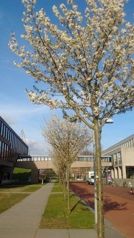

پیادهروی در دلفت-پسین نه آوریل دوهزار و پانزده
2015-04-09 20:14
پیادهروی در دلفت-صبح نه آوریل دوهزار و پانزده
2015-04-09 10:20

پیادهروی در دلفت-پسین هشت آوریل دوهزار و پانزده
2015-04-08 21:14

دانشگاه نزدیک آولا. بهار دلفت تازه دارد از راه میرسد.